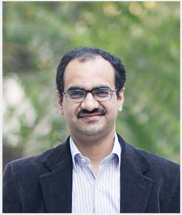
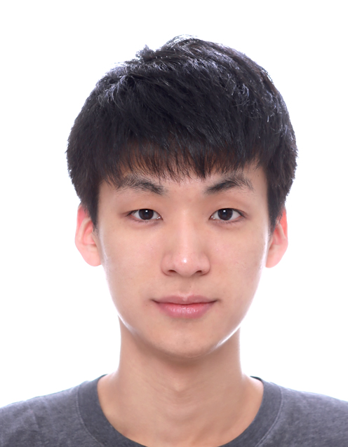

The workshop aims to address challenges in robotic locomotion and manipulation research in real world by providing a comprehensive overview of experiment-oriented approaches. Topics covered include hardware design and computation models including practical know-hows. Participants will discuss how to design experiments to accurately evaluate robotic locomotion and manipulation performance. By the end of the workshop, participants will have gained a deeper understanding of experiment-oriented approaches.
The organizers strongly believe that a workshop is an appropriate forum for approaching this topic, as it facilitates direct access to experts in the field and face-to-face discussions.
Description
The ability of robots to operate effectively in unstructured and dynamic environments depends heavily on their robotic locomotion and manipulation skills. However, achieving these skills is often challenging due to the complexity and coordination required for many tasks. Despite the significant amount of research on this topic, many research papers still remain in a simulation world, which often fails to capture the diversity and complexity of real systems and their environments.
To address these challenges, our workshop seeks to provide a comprehensive overview of approaches that ensure high performance on real systems. The following topics will be covered:
Hardware Design: The use of transparent actuation, simple mechanisms, and low-noise sensors can facilitate accurate and simple modeling, which can then be translated to better sim-to-real transfers. We will discuss how to design and combine good hardware components for high-performance robots.
Analytical Methods: Good algorithms must account for uncertainties in both the robot and the environment model, producing robust control outputs that avoid risks and guarantee maximum expected performance. Model parameter estimation and online adaptation are also critical to increasing performance on real systems. We will discuss the existing analytical algorithms that explore these possibilities.
Data-driven Methods: Both simulation-based training methods and direct hardware training have shown impressive performance on real-legged robots and robot arms. They can employ detailed and accurate physics simulation, account for uncertainties in the model, and adapt to dynamic environments. We will present the latest breakthroughs in data-driven approaches for legged robots and manipulation.
Submissions
We solicit 3 page extended abstracts (page counts do not include references). On acceptance, the camera ready version can be a full paper upto 6 pages (excluding references). Submissions can include original research, position papers, and literature reviews that bridge the research areas for this workshop. Submissions will be externally reviewed, and selected based on technical content and ability to positively contribute to the workshop. All accepted contributions will be presented in interactive poster sessions. A subset of accepted contributions will be featured in the workshop as spotlight presentations.
The following list contains some areas of interest, but work in other areas is also welcomed:
- Novel transparent hardware design including sensor placement, system identification, and design optimization
- Safe and/or contact-aware control methods under physical interactions
- Integrated task and motion planning methods for real-world applications
- Learning and transfer approaches including Sim2Real, Real2Sim, and meta transfer learning methods
- Accurate and repeatable experimental evaluations
We will accept papers in the official IEEE templates (LaTeX and Word). Submissions must meet page restrictions (maximum of 3 pages for extended abstracts and 6 pages for full papers), but can include additional pages as long as those pages only contain references. Reviewing will not be double blind. Please do not anonymize the submission.
Papers and abstracts should be submitted through the following link: TBD.
Important Dates
(deadlines are "anywhere on earth")
- May 5
- Workshops call for contribution
- June 5
- Extended abstract submission deadline
- June 19
- Notification of acceptance
- July 3
- Camera ready deadline for full paper
- July 10
- Workshop
Presentations
All accepted contributions will be presented in interactive poster sessions. We strongly recommend adhering to the following poster size:
Potrait configuration: 32 inch (width) x (40 inch height)
We derived this size from the following data. Each poster stand has a usable area of 74 inch (width) x 38 inch (height). This area will be split among two posters appearing side by side. Unfortunately, RSS organizers have notified us of limited availability of stands and space. Hence we kindly urge the presenters to adhere to the specified dimensions.
Note that the poster session will take place in a different room from the main workshop. This room is available from 2.00 p.m to 7.00 p.m. The presenters should setup soon after lunch and be near their stands. Please check the schedule for the room number and the timings.
Contributions selected for spotlight presentations should prepare a 5 minute talk. This will be followed by 1 minute of audience questions. During this time the next presenter should set up. All presenters should check in during the first coffee break and verify display settings. Please check the schedule for the presentation order.
Program
Location
Workshop: TBD
Poster: TBD
| Time | Topic | Speaker |
|---|---|---|
| 09:00 - 09:15am | Introduction | Organizers |
| 09:15 - 09:45am | TBD | TBD |
| 09:45 - 10:15am | TBD | TBD |
| 10:15 - 10:30am | TBD | Spotlight Talks I |
| 10:30 - 11:00pm | Coffee break + Poster Session | |
| 11:00 - 11:30am | TBD | TBD |
| 11:30 - 12:00pm | TBD | TBD |
| 12:00 - 13:30pm | Lunch | |
| 13:30 - 14:00pm | Spotlight Talks II | |
| 14:00 - 14:30pm | TBD | Christian Ott |
| 14:30 - 15:00pm | TBD | Tucker Hermans |
| 15:00 - 15:30pm | Coffee break + Poster Session | |
| 15:30 - 16:00pm | TBD | Spotlight Talks III |
| 16:00 - 16:30pm | TBD | Rohan Paul |
| 16:30 - 17:00pm | TBD | Tapomayukh Bhattacharjee |
| 17:00 - 17:30pm | TBD | Shuran Song |
| 17:30 - 18:00pm | Panel Discussions (TBD) | Invited Speakers |
Tentatively accepted speakers
Christian Ott, Technischen Universität Wien & German Aerospace Center (DLR) |
|
Jie Tan, Google Brain Robotics |
|
Hae-Won Park, Korea Advanced Institute of Science and Technology |
|

|
Deepak Pathak, Carnegie Mellon University |
|  | Rohan Paul, Indian Institute of Technology Delhi |
Tapomayukh Bhattacharjee, Cornell University |
|
Shuran Song, Columbia University |
|
Kyoungchul Kong, Angel Robotics & Korea Advanced Institute of Science and Technology |
|
Tucker Hermans, University of Utah |
Organizers
Organizing Committee
Daehyung ParkSchool of ComputingKorea Advanced Institute of Science and Technology |
||
Jemin HwangboMechanical EngineeringKorea Advanced Institute of Science and Technology |
||
|  | Minjun KimSchool of Electrical EngineeringKorea Advanced Institute of Science and Technology |